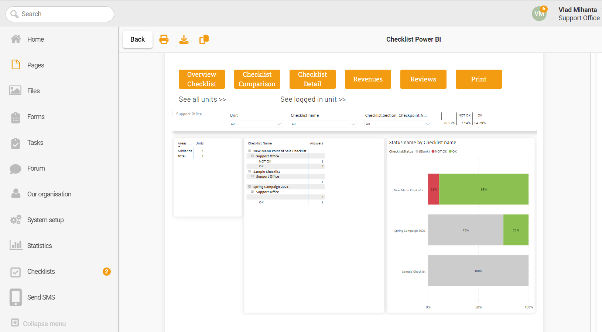
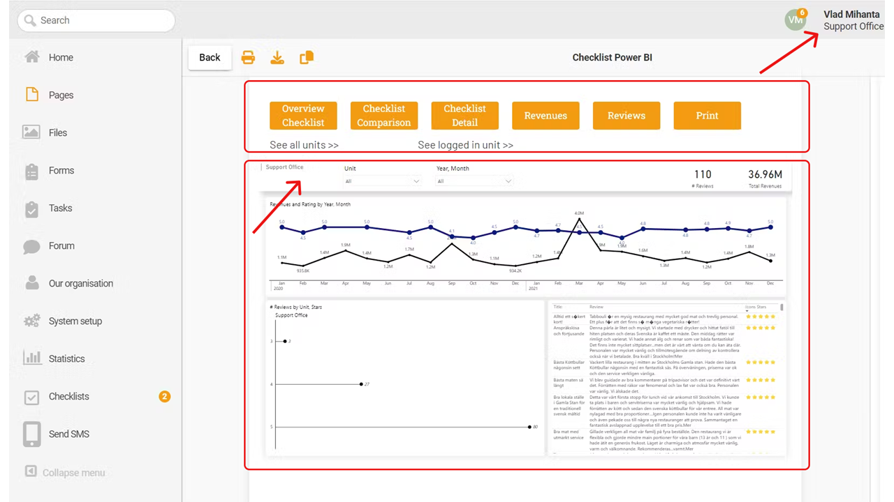
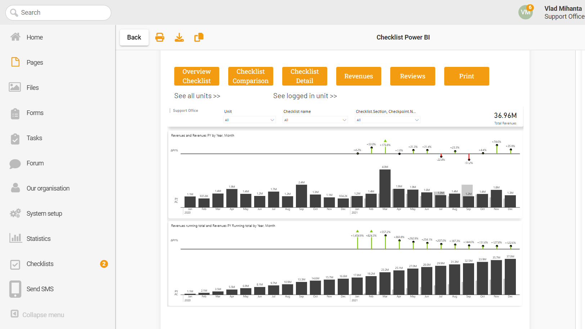

You are viewing Summary view. You can go deeper into the project with this navigation.
Previous article
Ctrl + A
PROJECT
7
/
7
Next article
Ctrl + D
How a Swedish SaaS Leveraged Power BI Embedded for Data Analytics in Their Mature Product
How We Helped a Platform Revolutionize Data Insights for Multi-Location Brands and Franchises
Overview
Over the past two decades, our client, a Swedish tech company, has been helping multi-location brands and franchises with their digital SaaS tool. The company simplifies operations by effectively managing manuals, checklists, audits, and communication across all franchises for its clients. Recently, they faced a significant challenge that came out as a simple request by their users and was followed by a bigger challenge from their biggest client. This case study explores how Stories of Data helped them address the issue and turned it into an opportunity for the platform’s success.
data analysis
Power BI
The Challenge:
The Users of the platform requested easily accessible insights into their data presented in a visual format. However, the platform's current setup with its API didn't provide the user-friendly visuals they needed.
Complicating matters, their biggest client required insights on data that sits outside the platform
So, we had two challenges:
1. Making data visuals user-friendly within the platform
2. Figuring out a solution to show insights beyond the platform's usual data.
Objectives:
For the client:
Ensure data security within a protected environment.
Provide each of their 100+ unit managers with selective access to relevant data.
Maintain familiarity and ease of use for seamless integration.
Implement a solution with no setup effort.
Avoid additional software purchases.
For the platform:
Enable the largest client to access insights without leaving the platform.
Implement a cost-effective solution without excessive time or financial investment.
Develop a customized solution integrating external data for the client.
Uphold the security of client data and the overall platform.

Assessment and Collaboration:
In addressing the challenge, we carefully examined the requirements, taking into account both the major client and the various needs of all platform users. Crucially, we didn't go at it alone. We collaborated with one of their engineers to make sure everything was in sync.
To execute the solution, we used these resources:
WYSIWYG Text Editor: A user-friendly in-platform text editing tool.
Client's Data via API: Drawing information directly from our clients.
External Data as CSVs: Incorporating additional details from spreadsheet-like files.
CEO and Engineer Support: Securing leadership backing for a smoother implementation.
This collaboration and open talks with both clients and engineers helped us navigate the challenge successfully.
Our Solution:
After understanding what both clients and the platform needed, we came up with what we believed to be the best solution for this particular case.
“We decided to create an embedded dashboard distributed through the platform to all the users of the client.”
To make it happen, we used the Extract, Transform, Load (ETL) process with Power BI to create a customized dashboard. It was a simple process that involved understanding API endpoints and data structure.
This method ensured a solution that was easy to use and visually intuitive, meeting the goals of both clients and the platform.
Unforeseen Challenge:
So, those fancy dashboards we thought were a win? Turns out, ensuring the right data reaches the right people among their 100+ users was trickier than expected.
The real challenge? Ensuring each logged-in user sees precisely what they need on the dashboard. And, of course, keeping everything secure.
Final Solution:
After lots of digging and trying different things, we solved the problem with these two ways:
First, we used a low-code platform as the bridge connecting the platform to the Power BI dashboard. (A safer approach than using “publish to web” iframe.)
Second, with the help of iframes, we could filter our data in Power BI Embedded and show each user exactly what they needed.
This not only saved us but completed our solution. Now, with one secure and smartly set-up report, our platform lets over 100 users access external data effortlessly.

Wins for the Platform:
Retained the major client within the platform.
Implemented a cost-effective, customized solution.
Integrated external data securely.
Wins for the Client:
Gained insights in a secure environment.
Provided unit-specific data access for +100 managers.
Maintained familiarity, ease of use, and zero additional costs.
By developing this, we proved and tested a solution that could be expanded to all their +100 clients with marginal changes. This means that in a matter of weeks, the platform can offer modern, fast, and secure analytics to all its clients with minimal involvement from their engineering teams.
How a Swedish SaaS Leveraged Power BI Embedded for Data Analytics in Their Mature Product
How We Helped a Platform Revolutionize Data Insights for Multi-Location Brands and Franchises
The Technical Challenge:
In this section, we dive into the technical challenges we faced and explain how we solved them. The platform users requested easily accessible insights into their data presented in a visual format. However, the platform's current setup with its API didn't provide the user-friendly visuals they needed.
Complicating matters, their biggest client required insights on data that sits outside the platform.
So, we had two challenges:
1. Making data visuals user-friendly within the platform
2. Figuring out a solution to show insights beyond the platform's usual data.
data analysis
Power BI
Objectives:
For the client:
Ensure data security within a protected environment.
Provide each of their 100+ unit managers with selective access to relevant data.
Maintain familiarity and ease of use for seamless integration.
Implement a solution with no setup effort.
Avoid additional software purchases.
For the platform:
Enable the largest client to access insights without leaving the platform.
Implement a cost-effective solution without excessive time or financial investment.
Develop a customized solution integrating external data for the client.
Uphold the security of client data and the overall platform.

Assessment and Collaboration: Navigating Technical Complexities
In addressing the challenge, we carefully examined the requirements and found that the technical implementation of the solution required two main technologies:
Power BI as the BI engine
A low-code platform to bridge the gap between the platform and the dashboard contextualization
In order to provide the solution, we had the following resources:
a WYSIWYG text editor inside the platform
the client’s data through the platform’s API
the client’s outside data as CSVs
support from the CEO of the platform and one of the engineers
This collaboration and open talks with both clients and engineers helped us navigate the challenge successfully.
Strategic Planning and Proposed Solution: Power BI Integration
After assessing all the details and requirements, we came up with what we believed to be the best solution for this particular case.
“We decided to create an embedded dashboard distributed through the platform to all the users of the client.”
Access to client data enabled a smooth ETL process to build the needed Power BI dashboard. It wasn't overly complex; we just had to grasp API endpoints and data structure with a helpful nudge from one of the platform's engineers.
Our Biggest Challenge: Link the Platform and BI Engine.
With the WYSIWYG editor, embedding a Power BI iframe using the "publish to web" approach was a breeze.
However, there was a risk with the "publish to web" approach.
A “publish to web” iframe can be copied and shared with bad actors, threatening the security of the platform.
So the big question was:
“How do we make sure each of our 100+ users sees exactly what they need on the dashboard while keeping it secure from unwanted eyes?”
In technical language, our challenge was, "How do we bridge the gap between the platform and the BI Engine?"
Since we couldn't access the platform's code, the usual method of coding to customize the dashboard was off the table. This tricky challenge needed a creative approach to connect the platform and the BI engine smoothly.
Navigating the Technical Landscape: Leveraging Power BI Expertise
Fortunately, we had prior experience with Power BI Embedded – which led us on the right track and showed us the way.
The solution lies in using a low-code platform as the bridge connecting the platform to the Power BI dashboard.
Our strategy involved programmatically embedding the Power BI iframe within the low-code platform and then embedding the iframe from the low-code platform onto the main platform.
This approach granted us the flexibility within the low-code platform to modify the dashboard's behavior easily as needed.
The Final Challenge: Bridging the User-Data Gap
As we moved ahead with our strategy to connect the platform and Power BI dashboard through a low-code platform …a final and crucial hurdle loomed. :(
How do we pass the logged-in user to the dashboard as a filter?
Without this, the bridge had a gaping hole that would keep the platform and dashboard separated, making the entire solution useless.
The Ultimate Solution: Secret Power of iFrames
After some trial and error, we found a crucial method: extracting the logged-in user's information from the platform and seamlessly passing it as a variable from the low-code iframe to the Power BI iframe.
Surprisingly, iframes can do some pretty neat stuff!
This trick was a game-changer. Now, armed with the user's name, we could filter our data in Power BI Embedded and show each user exactly what they needed.
Our solution was a success. We planted a secure, smart report right into the platform, letting over 100 users easily access external data when they needed it.
Check out the full architecture diagram here.
Conclusion
In the end, both the client and the platform are thrilled with the result of using our solution for nearly two years. We accomplished the goals efficiently, requiring minimal support (2-3 hours from one engineer) and significantly lower costs than traditional platforms.
What's even better is that our solution turned out to be more potent than we initially thought, proving its mettle in a live environment.
By developing this, we proved and tested a solution that could be expanded to all their +100 clients with marginal changes. This means that in a matter of weeks, the platform can offer modern, fast, and secure analytics to all its clients with minimal involvement from their engineering teams.
Cookie Consent
By using this website, you agree to the storing of cookies on your device to enhance site navigation, analyze site usage, and assist in our marketing efforts. View our Privacy Policy for more information.
When you visit websites, they may store or retrieve data in your browser. This storage is often necessary for the basic functionality of the website. The storage may be used for marketing, analytics, and personalization of the site, such as storing your preferences. Privacy is important to us, so you have the option of disabling certain types of storage that may not be necessary for the basic functioning of the website. Blocking categories may impact your experience on the website. More Infomartion
These items are required to enable basic website functionality.
Marketing
These items are used to deliver advertising that is more relevant to you and your interests. They may also be used to limit the number of times you see an advertisement and measure the effectiveness of advertising campaigns. Advertising networks usually place them with the website operator’s permission.
Personalization
These items allow the website to remember choices you make (such as your user name, language, or the region you are in) and provide enhanced, more personal features. For example, a website may provide you with local weather reports or traffic news by storing data about your current location.
Analytics
These items help the website operator understand how its website performs, how visitors interact with the site, and whether there may be technical issues. This storage type usually doesn’t collect information that identifies a visitor.